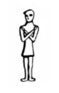

Rune Grimoire
Dagaz
Modern Relevance
Dagaz means "day" and signifies breakthroughs. Like dawn piercing the night, it heralds clarity, new endeavors, and a shift in understanding. It is a rune of growth and advancement.
Tree, Element, and Deity
Tree: spruce
Element: fire/air
Deity: Heimdall
Meaning: balance; night/day, black/white etc
Names Across Dialects
| Dialect | Word | Meaning |
|---|---|---|
| Proto-Germanic | dagaz | Day |
| Gothic | dags | Day |
| Old English | doeg | Day |
| Old Norse | dagr | Day (not in Younger row) |
| Icelandic | Dagur | Day |
| Norwegian | Dagr | Day |
Phonetic values: d and voiced th (as in "then")
Esoteric interpretation: the light of day
Ideographic interpretation: the balance between night and day
The Rune of Total Awakening
Dagaz is the light of day, perceived at the moments of sunrise and sunset, dawn and twilight. It is the rune of total awakening. The mystery of this rune is expressed in the invocatory verses spoken by Sigrdifa when she is awakened from a magickal slumber by the hero Sigurdhr ("the warder of victory"):
Hail Day!
Hail to Day's sons!
Hail Night and her daughter!
Look upon us twain
with loving eyes
and give those sitting here speed!
Hail the Gods!
Hail the Goddesses!
Hail the much needed earth!
Sayings and sage wit
give to us, the storied ones,
and healing hands in this life!
The D-rune represents the ritual fire of the hearth and the mystic light perceived by the vitki in magickal operations.
The Odhinic Paradox
Dagaz is the synthesis of the powers of day and night through the concepts of dawn and twilight. This is expressed by the heavenly phenomena of the morning and evening stars, as symbols of the divine twins.
This is the rune of polarity and of the "Odhinic paradox," which is the central mystery of the Odhinic cult. It is embodied in the paradoxical nature of the god Odin and is best explained in terms of the "mystical moment." This is the moment that is sought out and found in the vortex of polarized concepts. These concepts are syncretized through a secret "alchemy" in which two extremes become one.
Dagaz is that time and place in which darkness and light, pleasure and pain, life and death, body and soul, matter and energy are synthesized into a common concept that goes beyond their perceived opposition. In Dagaz, language fails.
Rune Character
Represents the climax of orgasm where the objective of the working is realized. Like the planet Uranus, this rune gives flashes of intuition and knowledge. Useful in raising the kundalini. Best if used with other runes that enhance wisdom and awareness.
Keywords
- Light
- Polarity
- Syncretization
- Odhinic paradox
Galdr
dagaz dagaz dagaz
du da di de do
odh edh idh adh udh
od ed id ad ud
Stadha
Stand straight and cross arms in front of the chest in a D-rune form, with the fingertips touching the shoulders.

Magickal Workings
- Attaining the mystical moment through penetration of the secret of the Odhinic paradox
- Reception of mystical inspiration, the gift of Odin
- Raising the kundalini
- Flashes of intuition and knowledge
Constructive Applications
Represents the climax of orgasm where the objective of the working is realized. Like the planet Uranus, gives flashes of intuition and knowledge. Useful in raising the kundalini. Best used with other runes that enhance wisdom and awareness.